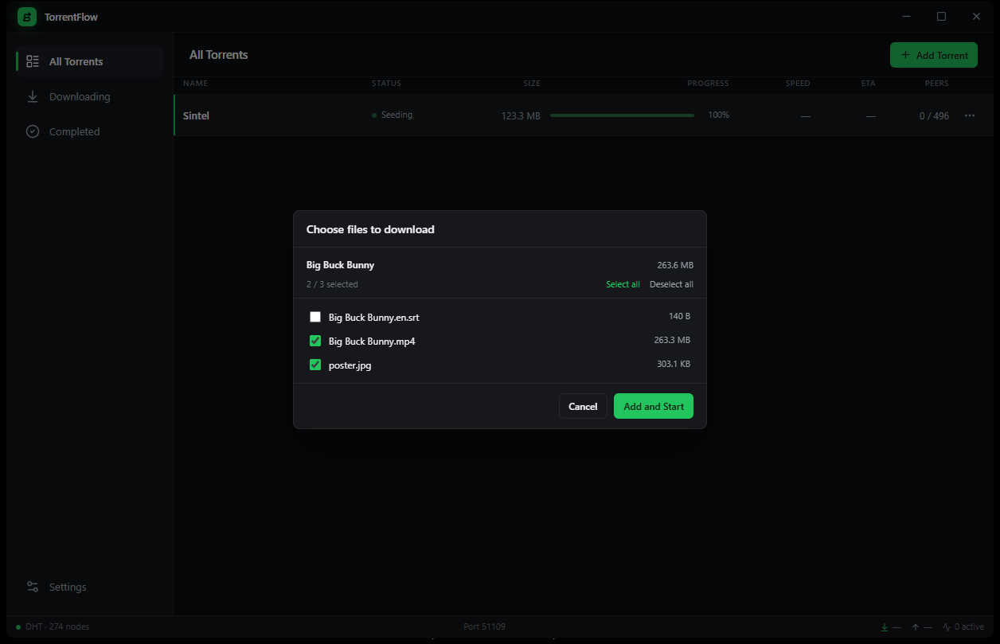

A native Windows torrent client that streams while it downloads, shows you every file before it lands, and stays out of your way. 19 MB. No Electron. No ads. No telemetry.
free · open source · MIT licensed

Built on Rust and librqbit with a React interface. No browser engine inside, no memory hog, no upsells.
Watch any video torrent in VLC the moment enough pieces arrive. Sequential fetching with subtitle priority — no waiting for the full file.
→ one click, straight to VLCPaste a magnet or drop a .torrent and inspect the real name, full file list and exact size before a single byte downloads.
→ zero surprisesEverything is tracked by info-hash. The same torrent can never be added twice.
Pick exactly which files to grab. Subtitles and video headers are prioritized automatically.
Trackerless downloads work out of the box. Hundreds of DHT nodes connected in seconds.
Jump straight to any download in Explorer from the details panel or the row menu.
A custom title bar, crisp typography and a UI that respects your eyes at 2 AM.
No wizards, no tabs of settings, no "are you sure". Paste, preview, go. TorrentFlow handles the protocol plumbing so you never think about it.
Magnet link or .torrent file. TorrentFlow fetches metadata instantly over DHT.
See every file with its size. Take everything or just the one you want.
Stream to VLC while it downloads, or let it finish and open the folder in one click.
Grab v0.1.0, run the installer, paste a magnet. That's it.
windows 10/11 · x64 · ~19 MB